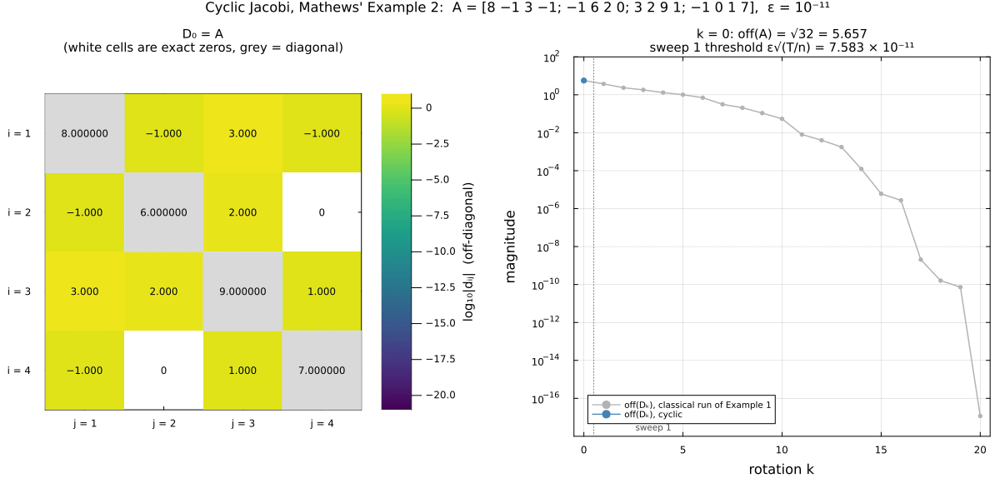
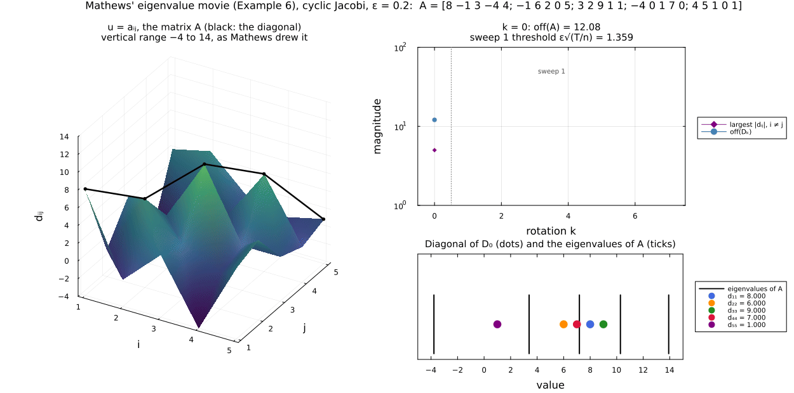
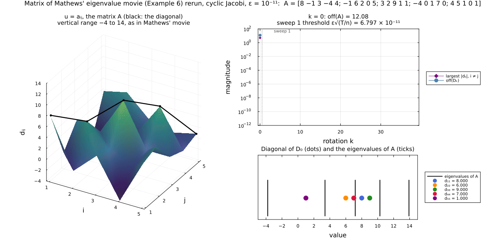

Jacobi method
Source inspiration: (Mathew 2000-2019).
Description
This page is about Jacobi’s eigenvalue method, also called Jacobi’s rotation method or Jacobi iteration for eigenvectors. It finds all the eigenvalues and eigenvectors of a real symmetric matrix. It is not the Jacobi iteration for solving a linear system \(\mathbf{A}\mathbf{X} = \mathbf{B}\), which has its own page, Jacobi and Gauss-Seidel Iteration.
The method starts from \(\mathbf{D}_0 = \mathbf{A}\) and applies one plane rotation \(\mathbf{R}_j\) at a time, as an orthogonal similarity transformation. Each rotation is chosen to make one symmetric pair of off-diagonal entries \(d_{pq} = d_{qp}\) exactly zero:
\[ \mathbf{D}_j = \mathbf{R}_j^{T}\,\mathbf{D}_{j-1}\,\mathbf{R}_j, \qquad \theta = \frac{d_{qq} - d_{pp}}{2\,d_{pq}}, \quad t = \frac{\operatorname{sign}(\theta)}{|\theta| + \sqrt{\theta^2 + 1}}, \quad c = \frac{1}{\sqrt{t^2 + 1}}, \quad s = c\,t . \]
A later rotation can make a zeroed entry nonzero again. Still, every rotation lowers the sum of the squares of the off-diagonal entries by exactly \(2d_{pq}^2\), so the matrices \(\mathbf{D}_j\) approach a diagonal matrix. Its diagonal holds the eigenvalues, and the product \(\mathbf{V} = \mathbf{R}_1\mathbf{R}_2\cdots\mathbf{R}_j\) holds the unit eigenvectors as its columns. Mathews gives two ways to choose which entry to zero. In the classical method, the one Jacobi used, each rotation zeroes the off-diagonal entry of largest magnitude. In the cyclic method, sweeps go through the entries row by row in a fixed order. Every Jacobi run on this page has been recomputed, rotation by rotation, with Mathews’ own stopping rules.
Animations
Each animation below follows one of Mathews’ worked examples, one rotation per frame. Cases 1 and 2 draw the \(4 \times 4\) matrix \(\mathbf{D}_k\) of Examples 1 and 2 as a grid of cells: the off-diagonal cells are coloured by \(\log_{10}\lvert d_{ij}\rvert\), the grey diagonal cells hold the eigenvalue estimates, a white cell is an exact zero, and the pair just zeroed is outlined in red. Cases 3 and 4 draw the \(5 \times 5\) matrix of Example 6 as a surface \(u = d_{ij}\) over the grid of indices \((i, j)\), as Mathews’ eigenvalue movie does. Beside each matrix, a panel with a logarithmic axis shows \(\operatorname{off}(\mathbf{D}_k)\), the magnitude \(\lvert a_{pq}\rvert\) that each rotation removes and Mathews’ stopping threshold \(\epsilon\sqrt{T/n}\). The rotations are computed in 300-bit arithmetic with formulas (4), as in the tables below, so the labels agree with the tables. Each script stores the zeroed pair as an exact \(0\), as (4) prescribes; Mathews’ subroutine computes it, which leaves a rounding residue (below \(6 \times 10^{-90}\) in 300-bit arithmetic).
Case 3 rebuilds Mathews’ eigenvalue movie of Example 6. His notebook drew its eight graphs and had Mathematica flip through them, but the archive keeps them only as eight separate still images, and his collection of animations has none for Jacobi’s method. Cases 1, 2 and 4 are new. Not animated: the eigenvector matrix \(\mathbf{V}\) (the scripts compute it but do not draw it), the verification of the eigenpairs and the comparisons with Mathematica’s Eigensystem, and Examples 3 to 5, which compare running times and rotation counts on random matrices.
Julia source scripts that generated these animations are linked under each case.
Case 1 — Classical Jacobi on the \(4 \times 4\) matrix of Example 1, \(\epsilon = 10^{-11}\), \(20\) rotations
Behavior: Each rotation zeroes the largest off-diagonal entry, and the next rotations can make it nonzero again: rotation 2, in the \((1, 2)\) plane, turns the zeros at \((1, 3)\) and \((2, 4)\) into \(0.5800\) and \(0.9293\). The largest entry still falls at every rotation, from \(3.000\) to \(5.107 \times 10^{-11}\) (orange triangles). Over the first ten rotations \(\operatorname{off}(\mathbf{D}_k)\) falls by a ratio between \(0.448\) and \(0.771\) per rotation, inside the general bound (8) (dashed). Later rotations mix ratios between \(0.441\) and \(0.493\) with much smaller ones, down to \(7.49 \times 10^{-4}\) at rotation 17 and \(1.62 \times 10^{-7}\) at rotation 20, and the colours of the off-diagonal cells darken from yellow toward purple. From rotation 13 on, the grey diagonal cells show \(3.295699\), \(8.407662\), \(11.70430\) and \(6.592338\) to seven significant digits. Rotation 20 removes \(\lvert a_{12}\rvert = 5.107 \times 10^{-11}\), below the threshold \(8.093 \times 10^{-11}\), so the run stops. This entry and its mirror were almost all of \(\operatorname{off}(\mathbf{D}_{19}) = 7.223 \times 10^{-11} \approx \sqrt2 \times 5.107 \times 10^{-11}\), so the last rotation drops \(\operatorname{off}\) to \(1.167 \times 10^{-17}\). The final matrix has exact zeros at \((1, 2)\) and \((3, 4)\) and other off-diagonal entries between \(6.542 \times 10^{-31}\) and \(8.250 \times 10^{-18}\) in magnitude.

Case 2 — Cyclic Jacobi on the same matrix (Example 2), \(\epsilon = 10^{-11}\), \(20\) rotations in \(5\) sweeps
Behavior: The red outline moves through the pairs in the fixed order \((1,2), (1,3), (1,4), (2,3), (2,4), (3,4)\): all six pairs in each of sweeps 1 to 3, only \((1, 2)\) and \((1, 3)\) in sweep 4. The final frames explain the stop. In sweep 4 the other four pairs are below the threshold \(8.093 \times 10^{-11}\), and sweep 5 rotates nothing. The magnitudes removed do not fall steadily: they rise at rotations 2, 4, 7, 10 and 13. In grey, the classical run of Case 1 is shown for comparison. The cyclic \(\operatorname{off}(\mathbf{D}_k)\) lies above it after every rotation, ending at \(1.693 \times 10^{-11}\) against \(1.167 \times 10^{-17}\). Rule (9) leaves \(d_{14} = -5.957 \times 10^{-12}\) and \(d_{23} = -1.038 \times 10^{-11}\) in place. From rotation 15 on, the diagonal shows the eigenvalues of Case 1 in another order, \(6.592338\), \(3.295699\), \(11.70430\) and \(8.407662\).

Case 3 — Mathews’ eigenvalue movie (Example 6), cyclic Jacobi on a \(5 \times 5\) matrix, \(\epsilon = 0.2\), \(7\) rotations
Behavior: As in Mathews’ movie, the matrix is drawn as a surface with vertical range \(-4\) to \(14\), at the start and after each of the 7 rotations: \((1,3)\), \((1,4)\), \((1,5)\), \((2,5)\), \((3,4)\) and \((3,5)\) in sweep 1, then \((2,3)\) in sweep 2. The red markers, the black line along the diagonal and the two right-hand panels are added. Each rotation brings the surface to \(0\) at the pair it zeroes (down from a peak or up from a dip), and \(\operatorname{off}(\mathbf{D}_k)\) falls from \(12.08\) to \(3.716\). In the final frames the largest off-diagonal entry, \(1.600\), is below the sweep 3 threshold \(1.705\), so the run stops with off-diagonal entries of up to \(1.600\) in magnitude still in place. The diagonal dots, \(3.728\), \(8.133\), \(13.63\), \(9.166\) and \(-3.656\), have not all reached the eigenvalue ticks: \(d_{22}\) and \(d_{44}\) are clearly off theirs, \(d_{11}\) and \(d_{33}\) sit just beside theirs, and \(d_{55}\) covers its tick. Each is between \(0.13\) and \(1.12\) from the nearest eigenvalue. The loose tolerance shows only the first stage of the diagonalisation.

Case 4 — The same matrix rerun with \(\epsilon = 10^{-11}\), \(39\) rotations in \(6\) sweeps
Behavior: With the tight tolerance every entry is above the threshold when the sweep reaches it, so sweeps 1 to 3 rotate all ten pairs. This includes \((2, 4)\) and \((4, 5)\), which are \(0\) in \(\mathbf{A}\) but have become \(0.6541\) and \(1.768\) by the time sweep 1 reaches them. Sweeps 4, 5 and 6 make 8, 1 and 0 rotations. After each sweep, \(\operatorname{off}(\mathbf{D})\) is \(4.185\), \(0.4553\), \(0.002857\), \(2.357 \times 10^{-10}\) and \(1.591 \times 10^{-11}\). The off-diagonal part of the surface flattens to \(0\), leaving the five eigenvalues as peaks and a dip along the diagonal. Every diagonal dot is within \(0.05\) of an eigenvalue tick from rotation 18 on, and within \(0.01\) from rotation 25 on. At the end of the run the largest off-diagonal entry, \(8.673 \times 10^{-12}\), is below the threshold \(8.683 \times 10^{-11}\). The diagonal then agrees with the eigenvalues \(3.394496\), \(7.186877\), \(13.92175\), \(10.28074\) and \(-3.783859\) to within \(10^{-23}\).

Plane Rotations and Similarity Transformations
For \(1 \le p < q \le n\) and an angle \(\phi\), with \(c = \cos\phi\) and \(s = \sin\phi\), the plane rotation \(\mathbf{R}\) is the \(n \times n\) identity matrix with four entries changed:
\[ r_{pp} = c, \qquad r_{pq} = s, \qquad r_{qp} = -s, \qquad r_{qq} = c . \]
The map \(\mathbf{Y} = \mathbf{R}\mathbf{X}\) is a rotation of \(n\)-dimensional space through the angle \(\phi\) in the \(x_p x_q\)-plane: \(y_p = c\,x_p + s\,x_q\), \(y_q = -s\,x_p + c\,x_q\), and every other coordinate is unchanged. \(\mathbf{R}\) is orthogonal: \(\mathbf{R}^{-1} = \mathbf{R}^{T}\).
Let \(\mathbf{R}\) be orthogonal and \(\mathbf{D} = \mathbf{R}^T\mathbf{A}\mathbf{R}\). Then \(\mathbf{A}\) and \(\mathbf{D}\) have the same eigenvalues, and \(\mathbf{A}\mathbf{X} = \lambda\mathbf{X}\) exactly when \(\mathbf{D}\mathbf{Y} = \lambda\mathbf{Y}\) with \(\mathbf{X} = \mathbf{R}\mathbf{Y}\). If \(\mathbf{A}\) is symmetric, so is \(\mathbf{D}\), because \(\mathbf{D}^T = \mathbf{R}^T\mathbf{A}^T\mathbf{R} = \mathbf{D}\).
The Jacobi series of transformations starts with the real symmetric matrix \(\mathbf{A}\) and builds orthogonal matrices \(\mathbf{R}_1, \mathbf{R}_2, \ldots\) with
\[ \mathbf{D}_0 = \mathbf{A}, \qquad \mathbf{D}_j = \mathbf{R}_j^T\,\mathbf{D}_{j-1}\,\mathbf{R}_j \quad (j = 1, 2, \ldots), \tag{1} \]
chosen so that
\[ \lim_{j \to \infty} \mathbf{D}_j = \mathbf{D} = \operatorname{diag}(\lambda_1, \lambda_2, \ldots, \lambda_n). \tag{2} \]
(The module page prints the recursion as \(\mathbf{D}_j = \mathbf{R}_j^T\mathbf{D}_j\mathbf{R}_j\), which is a typo. The textbook section it links to has \(\mathbf{D}_{j-1}\) on the right.) In practice the iteration stops after \(m\) rotations, once the off-diagonal entries are close to zero, so \(\mathbf{D}_m \approx \mathbf{D}\). With \(\mathbf{V}_m = \mathbf{R}_1\mathbf{R}_2\cdots\mathbf{R}_m\), an orthogonal matrix, equation (1) gives \(\mathbf{D}_m = \mathbf{V}_m^T\mathbf{A}\mathbf{V}_m\), so
\[ \mathbf{A}\mathbf{V}_m = \mathbf{V}_m\mathbf{D}_m \approx \mathbf{V}_m \operatorname{diag}(\lambda_1, \ldots, \lambda_n). \tag{3} \]
Column \(k\) of (3) reads \(\mathbf{A}\mathbf{X}_k \approx \lambda_k\mathbf{X}_k\). So column \(k\) of \(\mathbf{V}_m\) is a unit eigenvector for the eigenvalue in diagonal position \(k\) of \(\mathbf{D}_m\). The eigenvalues come out in whatever order the rotations leave them, not sorted.
The General Step: Zeroing \(d_{pq}\)
One rotation in the \((p, q)\) plane changes only rows \(p\) and \(q\) and columns \(p\) and \(q\). Write \(\mathbf{A}\) for the current matrix and \(\mathbf{D} = \mathbf{R}^T\mathbf{A}\mathbf{R}\) for the next one. Then, for \(j \ne p, q\),
\[ \begin{aligned} d_{jp} &= c\,a_{jp} - s\,a_{jq}, &\qquad d_{jq} &= s\,a_{jp} + c\,a_{jq},\\ d_{pp} &= c^2 a_{pp} + s^2 a_{qq} - 2cs\,a_{pq}, &\qquad d_{qq} &= s^2 a_{pp} + c^2 a_{qq} + 2cs\,a_{pq},\\ d_{pq} &= (c^2 - s^2)\,a_{pq} + cs\,(a_{pp} - a_{qq}), \end{aligned} \tag{4} \]
and the rest of \(\mathbf{D}\) follows by symmetry. To make \(d_{pq} = 0\) when \(a_{pq} \ne 0\), set the last line to zero and divide by \(2cs\). With \(\theta = \cot 2\phi = (c^2 - s^2)/(2cs)\) this gives
\[ \theta = \frac{a_{qq} - a_{pp}}{2\,a_{pq}} . \tag{5} \]
Mathews avoids the angle itself and uses \(t = \tan\phi = s/c\), which spreads less round-off. Dividing the numerator and the denominator of \(\theta\) by \(c^2\) gives \(\theta = (1 - t^2)/(2t)\), that is, \(t^2 + 2t\theta - 1 = 0\). The root of smaller magnitude belongs to the smaller rotation, with \(|\phi| \le \pi/4\), and is computed without cancellation as in the box below.
\[ \theta = \frac{a_{qq} - a_{pp}}{2\,a_{pq}}, \qquad t = \frac{\operatorname{sign}(\theta)}{|\theta| + \sqrt{\theta^2 + 1}}, \qquad c = \frac{1}{\sqrt{t^2 + 1}}, \qquad s = c\,t, \tag{6} \]
with \(\operatorname{sign}(\theta) = 1\) for \(\theta \ge 0\) and \(-1\) for \(\theta < 0\). For very large \(\theta\) (\(\theta \ge 10^{19}\)), Mathews’ subroutine uses \(t = 1/(2\theta)\) instead, which avoids overflow in \(\theta^2\). Then \(d_{pq} = d_{qp} = 0\), the other entries follow from (4), and columns \(p\) and \(q\) of the eigenvector matrix are updated in the same way as the columns of \(\mathbf{A}\):
\[ v_{jp} \leftarrow c\,v_{jp} - s\,v_{jq}, \qquad v_{jq} \leftarrow s\,v_{jp} + c\,v_{jq} \qquad (j = 1, \ldots, n), \]
starting from \(\mathbf{V} = \mathbf{I}\). Both right-hand sides use the old values of \(v_{jp}\) and \(v_{jq}\).
Convergence and the Choice of \((p, q)\)
Let \(S\) be the sum of the squares of the off-diagonal entries of the current matrix, and \(T\) the sum of the squares of its diagonal entries:
\[ S = \sum_{j \ne k} a_{jk}^2, \qquad T = \sum_{j=1}^{n} a_{jj}^2, \qquad \operatorname{off}(\mathbf{A}) = \sqrt{S}. \]
If \(\mathbf{D}\) is obtained from \(\mathbf{A}\) by the rotation (6) that zeroes \(a_{pq}\), then
\[ S(\mathbf{D}) = S(\mathbf{A}) - 2a_{pq}^2, \qquad T(\mathbf{D}) = T(\mathbf{A}) + 2a_{pq}^2, \tag{7} \]
and \(S + T\), the squared Frobenius norm, does not change. So the sums \(S(\mathbf{D}_j)\) decrease strictly at every step that rotates a nonzero entry, and they are bounded below by zero.
Classical Jacobi. Jacobi’s own algorithm of 1846 zeroes, at each step, the off-diagonal entry of largest magnitude, \(\max_{p<q} |a_{pq}|\). The \(n(n-1)\) off-diagonal entries have squares that sum to \(S\), so the largest square is at least the average: \(a_{pq}^2 \ge S/(n(n-1))\). Then (7) gives a general bound that holds for every symmetric matrix:
\[ S(\mathbf{D}_{j}) \le \Bigl(1 - \frac{2}{n(n-1)}\Bigr) S(\mathbf{D}_{j-1}). \tag{8} \]
So \(S(\mathbf{D}_j) \to 0\), and \(\mathbf{D}_j\) converges to a diagonal matrix. For a \(4 \times 4\) matrix the factor in (8) is \(5/6\). The bound guarantees convergence but is pessimistic: it only promises linear convergence. Finding the largest entry needs a search over the off-diagonal entries before every rotation, about \(n^2\) entries, and this search costs more and more as \(n\) grows.
Cyclic Jacobi. The cyclic method drops the search and visits the entries in a fixed order, one sweep at a time: \(a_{12}, a_{13}, \ldots, a_{1n}\), then \(a_{23}, \ldots, a_{2n}\), and so on to \(a_{n-1,n}\). With a tolerance \(\epsilon\), the entry \(a_{pq}\) is zeroed only if it is large compared with the root-mean-square diagonal entry:
\[ |a_{pq}| > \epsilon \sqrt{T/n}. \tag{9} \]
The textbook section linked from the module states, as a general theorem it does not prove, that the convergence rate is quadratic for both the classical and the cyclic method. The result is asymptotic. Once the off-diagonal entries are small, one sweep, or one batch of \(n(n-1)/2\) classical rotations, reduces \(\operatorname{off}(\mathbf{D})\) to at most a constant multiple of its square. Examples 1 and 2 below measure this.
The examples use Mathews’ two subroutines exactly as written:
- Classical (tolerance \(\epsilon\)): find the entry \(a_{pq}\) of largest magnitude, record \(|a_{pq}|\), rotate it to zero, then stop if the recorded \(|a_{pq}|\) is less than \(\epsilon\sqrt{T/n}\), with \(T\) taken from the matrix after the rotation. The rotation that triggers the stop is always carried out.
- Cyclic (tolerance \(\epsilon\), at most \(m\) sweeps): at the start of each sweep compute \(\sqrt{T/n}\), then visit \((p, q)\) in row order and rotate every entry that satisfies (9) when it is reached. Stop after a sweep that makes no rotation, or after \(m\) sweeps.
Mathews’ module adds a remark. Demmel and Veselić (1992) showed that Jacobi’s method, with a proper stopping criterion, computes the small eigenvalues of symmetric positive definite matrices with a uniformly better relative-accuracy bound than QR, divide and conquer, bisection, or any method that first reduces the matrix to tridiagonal form. Mathews also notes that Jacobi’s method converges for every real symmetric matrix. In his 2004 assessment it is competitive with more sophisticated algorithms up to order \(10\), and acceptable up to order \(20\) when speed is not a major concern.
Algorithm
Given a real symmetric \(n \times n\) matrix \(\mathbf{A}\) and a tolerance \(\epsilon\):
- Set \(\mathbf{D} = \mathbf{A}\) and \(\mathbf{V} = \mathbf{I}\).
- Choose \((p, q)\): the largest \(|d_{pq}|\) for the classical method, or the next pair in row order that satisfies (9) for the cyclic method.
- Compute \(\theta, t, c, s\) from (6), update rows and columns \(p\) and \(q\) of \(\mathbf{D}\) by (4) with \(d_{pq} = d_{qp} = 0\), and update columns \(p\) and \(q\) of \(\mathbf{V}\).
- Repeat steps 2 and 3 until the stopping rule above is met.
- The eigenvalues are the diagonal entries \(d_{kk}\), and column \(k\) of \(\mathbf{V}\) is a unit eigenvector for \(d_{kk}\).
No starting vector, normalisation or shift is needed. \(\mathbf{V}\) stays orthogonal, so its columns are always unit vectors.
Example 1 — Classical Jacobi on a \(4 \times 4\) Matrix
Use the classical Jacobi method to find all the eigenvalues and eigenvectors of
\[ \mathbf{A} = \begin{pmatrix} 8 & -1 & 3 & -1 \\ -1 & 6 & 2 & 0 \\ 3 & 2 & 9 & 1 \\ -1 & 0 & 1 & 7 \end{pmatrix}. \]
Mathews runs his classical subroutine with \(\epsilon = 10^{-11}\). At the start, \(S(\mathbf{A}) = 2\bigl(1^2 + 3^2 + 1^2 + 2^2 + 0^2 + 1^2\bigr) = 32\), so \(\operatorname{off}(\mathbf{A}) = \sqrt{32} = 5.657\).
Step 1: The largest off-diagonal entry is \(a_{13} = 3\), so \((p, q) = (1, 3)\). Formula (6) gives
\[ \theta = \frac{9 - 8}{2 \cdot 3} = \frac{1}{6}, \qquad t = \frac{1}{\tfrac16 + \sqrt{\tfrac1{36} + 1}} = \frac{\sqrt{37} - 1}{6} = 0.847127, \qquad c = 0.763020, \qquad s = 0.646375, \]
a rotation through \(\phi = 40.27^\circ\). By (4), \(d_{11} = \tfrac{17}{2} - \tfrac{\sqrt{37}}{2} = 5.458619\), \(d_{33} = \tfrac{17}{2} + \tfrac{\sqrt{37}}{2} = 11.541381\), \(d_{21} = c\,a_{21} - s\,a_{23} = -0.763020 - 2(0.646375) = -2.055770\), and so on:
\[ \mathbf{D}_1 = \begin{pmatrix} 5.458619 & -2.055770 & 0 & -1.409395 \\ -2.055770 & 6.000000 & 0.879665 & 0 \\ 0 & 0.879665 & 11.541381 & 0.116645 \\ -1.409395 & 0 & 0.116645 & 7.000000 \end{pmatrix}. \]
The sum of squares has dropped from \(32\) to \(32 - 2(3^2) = 14\), as (7) requires.
Step 2: The largest entry is now \(d_{12} = -2.055770\). Then \(\theta = (6 - 5.458619)/(2 \cdot (-2.055770)) = -0.131674\), \(t = -0.876958\), \(c = 0.751847\) and \(s = -0.659338\), and
\[ \mathbf{D}_2 = \begin{pmatrix} 3.655795 & 0 & 0.579997 & -1.059649 \\ 0 & 7.802824 & 0.661373 & 0.929268 \\ 0.579997 & 0.661373 & 11.541381 & 0.116645 \\ -1.059649 & 0.929268 & 0.116645 & 7.000000 \end{pmatrix}. \]
The rotation in the \((1, 2)\) plane has made \(d_{13}\) and \(d_{24}\) nonzero again, but the total \(S\) has fallen to \(14 - 2(2.055770^2) = 5.547621\).
Steps 3 to 20: The table lists every rotation of the run. It gives the pair \((p, q)\) zeroed, the magnitude \(|a_{pq}|\) removed, the diagonal of \(\mathbf{D}_k\) after the rotation (6 decimals) and \(\operatorname{off}(\mathbf{D}_k)\):
| \(k\) | \((p, q)\) | \(\lvert a_{pq}\rvert\) | \(d_{11}\) | \(d_{22}\) | \(d_{33}\) | \(d_{44}\) | \(\operatorname{off}(\mathbf{D}_k)\) |
|---|---|---|---|---|---|---|---|
| 0 | — | — | 8.000000 | 6.000000 | 9.000000 | 7.000000 | \(5.657\) |
| 1 | \((1,3)\) | \(3.000\) | 5.458619 | 6.000000 | 11.541381 | 7.000000 | \(3.742\) |
| 2 | \((1,2)\) | \(2.056\) | 3.655795 | 7.802824 | 11.541381 | 7.000000 | \(2.355\) |
| 3 | \((1,4)\) | \(1.060\) | 3.348306 | 7.802824 | 11.541381 | 7.307489 | \(1.817\) |
| 4 | \((2,4)\) | \(0.8925\) | 3.348306 | 8.481337 | 11.541381 | 6.628976 | \(1.307\) |
| 5 | \((1,3)\) | \(0.5895\) | 3.306104 | 8.481337 | 11.583583 | 6.628976 | \(1.007\) |
| 6 | \((2,3)\) | \(0.5099\) | 3.306104 | 8.399672 | 11.665248 | 6.628976 | \(0.7027\) |
| 7 | \((3,4)\) | \(0.4442\) | 3.306104 | 8.399672 | 11.704123 | 6.590100 | \(0.3151\) |
| 8 | \((1,2)\) | \(0.1680\) | 3.300567 | 8.405210 | 11.704123 | 6.590100 | \(0.2069\) |
| 9 | \((1,4)\) | \(0.1244\) | 3.295870 | 8.405210 | 11.704123 | 6.594797 | \(0.1088\) |
| 10 | \((2,4)\) | \(0.06676\) | 3.295870 | 8.407668 | 11.704123 | 6.592338 | \(0.05415\) |
| 11 | \((1,3)\) | \(0.03786\) | 3.295700 | 8.407668 | 11.704293 | 6.592338 | \(0.008120\) |
| 12 | \((2,3)\) | \(0.004995\) | 3.295700 | 8.407661 | 11.704301 | 6.592338 | \(0.004005\) |
| 13 | \((1,2)\) | \(0.002541\) | 3.295699 | 8.407662 | 11.704301 | 6.592338 | \(0.001767\) |
| 14 | \((3,4)\) | \(0.001246\) | 3.295699 | 8.407662 | 11.704301 | 6.592338 | \(1.234 \times 10^{-4}\) |
| 15 | \((1,4)\) | \(8.715 \times 10^{-5}\) | 3.295699 | 8.407662 | 11.704301 | 6.592338 | \(6.066 \times 10^{-6}\) |
| 16 | \((1,3)\) | \(3.829 \times 10^{-6}\) | 3.295699 | 8.407662 | 11.704301 | 6.592338 | \(2.732 \times 10^{-6}\) |
| 17 | \((2,4)\) | \(1.932 \times 10^{-6}\) | 3.295699 | 8.407662 | 11.704301 | 6.592338 | \(2.047 \times 10^{-9}\) |
| 18 | \((2,3)\) | \(1.443 \times 10^{-9}\) | 3.295699 | 8.407662 | 11.704301 | 6.592338 | \(1.603 \times 10^{-10}\) |
| 19 | \((3,4)\) | \(1.012 \times 10^{-10}\) | 3.295699 | 8.407662 | 11.704301 | 6.592338 | \(7.223 \times 10^{-11}\) |
| 20 | \((1,2)\) | \(5.107 \times 10^{-11}\) | 3.295699 | 8.407662 | 11.704301 | 6.592338 | \(1.167 \times 10^{-17}\) |
The pair \((1, 3)\) is zeroed four times, at \(k = 1, 5, 11\) and \(16\). In this run the largest off-diagonal entry shrinks at every rotation. The stopping threshold is \(\epsilon\sqrt{T/n} = 8.093 \times 10^{-11}\) from rotation 8 on (it grows from \(7.874 \times 10^{-11}\) after rotation 1 as weight moves onto the diagonal). Rotation 19 removes \(1.012 \times 10^{-10}\), above the threshold, so the run continues. Rotation 20 removes \(5.107 \times 10^{-11}\), below it, so the run stops after 20 rotations. From rotation 13 on, all four diagonal entries agree with their final values to six decimals.
Rate. The ratio \(S(\mathbf{D}_k)/S(\mathbf{D}_{k-1})\) never exceeds \(0.595\) (at \(k = 3\)), well inside the bound \(5/6\) of (8). Over batches of \(n(n-1)/2 = 6\) rotations, \(\operatorname{off}(\mathbf{D}_k)\) goes from \(5.657\) to \(0.7027\) (\(k = 6\)), \(0.004005\) (\(k = 12\)) and \(1.603 \times 10^{-10}\) (\(k = 18\)). The ratio \(\operatorname{off}(\mathbf{D}_{k+6})/\operatorname{off}(\mathbf{D}_k)^2\) is \(0.022\), \(0.0081\) and \(1.0 \times 10^{-5}\), so each batch did at least square the off-diagonal norm, as the quadratic convergence theorem predicts.
Result. With \(\mathbf{V} = \mathbf{R}_1\mathbf{R}_2\cdots\mathbf{R}_{20}\),
\[ \mathbf{D}_{20} \approx \operatorname{diag}(3.295699,\ 8.407662,\ 11.704301,\ 6.592338), \qquad \mathbf{V} = \begin{pmatrix} 0.528779 & -0.573042 & 0.582298 & 0.230097 \\ 0.591967 & 0.472301 & 0.175776 & -0.628975 \\ -0.536039 & 0.282050 & 0.792487 & -0.071235 \\ 0.287455 & 0.607455 & 0.044680 & 0.739169 \end{pmatrix}. \]
This agrees with Mathews’ printed output, \(\Lambda = \operatorname{diag}(3.2957, 8.40766, 11.7043, 6.59234)\) and the same \(\mathbf{V}\) to six significant figures.
Verification: Column \(k\) of \(\mathbf{V}\) is \(\mathbf{X}_k\), and \(\lambda_k\) is the \(k\)th diagonal entry. Each row of the table compares \(\mathbf{A}\mathbf{X}_k\) with \(\lambda_k\mathbf{X}_k\) (6 decimals). The residual \(\lVert\mathbf{A}\mathbf{X}_k - \lambda_k\mathbf{X}_k\rVert\) comes from the same run carried out in 300-bit arithmetic, so it measures how far the iteration was taken, not rounding.
| \(k\) | \(\lambda_k\) | \(\mathbf{A}\mathbf{X}_k\) | \(\lambda_k\mathbf{X}_k\) | residual |
|---|---|---|---|---|
| 1 | 3.295699 | \((1.742697,\ 1.950944,\ -1.766622,\ 0.947363)\) | \((1.742697,\ 1.950944,\ -1.766622,\ 0.947363)\) ✓ | \(8.3 \times 10^{-18}\) |
| 2 | 8.407662 | \((-4.817945,\ 3.970949,\ 2.371379,\ 5.107280)\) | \((-4.817945,\ 3.970949,\ 2.371379,\ 5.107280)\) ✓ | \(4.4 \times 10^{-20}\) |
| 3 | 11.704301 | \((6.815387,\ 2.057330,\ 9.275510,\ 0.522952)\) | \((6.815387,\ 2.057330,\ 9.275510,\ 0.522952)\) ✓ | \(2.2 \times 10^{-20}\) |
| 4 | 6.592338 | \((1.516875,\ -4.146417,\ -0.469603,\ 4.872855)\) | \((1.516875,\ -4.146417,\ -0.469603,\ 4.872855)\) ✓ | \(8.3 \times 10^{-18}\) |
The same run in ordinary double precision takes the same 20 rotations and leaves residuals between \(6.7 \times 10^{-16}\) and \(2.9 \times 10^{-15}\). A library eigensolver gives the eigenvalues \(3.29569866\), \(6.59233804\), \(8.40766196\) and \(11.70430134\). Mathews compares with Mathematica’s Eigensystem, which lists them in decreasing order and returns the same unit eigenvectors, the one for \(11.7043\) with the opposite sign.
Example 2 — Cyclic Jacobi on the Same Matrix
Use the cyclic Jacobi method to find all the eigenvalues and eigenvectors of the same matrix \(\mathbf{A}\) as in Example 1.
Mathews runs his cyclic subroutine with \(\epsilon = 10^{-11}\) and at most \(m = 50\) sweeps. In the first sweep, \(\sqrt{T/n} = \sqrt{(64 + 36 + 81 + 49)/4} = \sqrt{57.5} = 7.582875\), so an entry is zeroed if its magnitude exceeds \(7.583 \times 10^{-11}\). The thresholds of later sweeps are \(8.001 \times 10^{-11}\) and then \(8.093 \times 10^{-11}\).
Step 1: The first pair visited is \((1, 2)\), with \(a_{12} = -1\). Then \(\theta = (6 - 8)/(2 \cdot (-1)) = 1\), \(t = 1/(1 + \sqrt 2) = 0.414214\), and the rotation puts the eigenvalues of the leading \(2 \times 2\) block, \(7 \pm \sqrt 2\), on the diagonal: \(d_{11} = 8.414214\) and \(d_{22} = 5.585786\). This removes only \(2(1^2) = 2\) from \(S\), against \(18\) for the classical method’s first choice, \(a_{13} = 3\).
Steps 2 to 20: Every rotation of the run, in order:
| \(k\) | sweep | \((p, q)\) | \(\lvert a_{pq}\rvert\) | \(d_{11}\) | \(d_{22}\) | \(d_{33}\) | \(d_{44}\) | \(\operatorname{off}(\mathbf{D}_k)\) |
|---|---|---|---|---|---|---|---|---|
| 0 | — | — | — | 8.000000 | 6.000000 | 9.000000 | 7.000000 | \(5.657\) |
| 1 | 1 | \((1,2)\) | \(1.000\) | 8.414214 | 5.585786 | 9.000000 | 7.000000 | \(5.477\) |
| 2 | 1 | \((1,3)\) | \(2.006\) | 6.679568 | 5.585786 | 10.734645 | 7.000000 | \(4.685\) |
| 3 | 1 | \((1,4)\) | \(1.353\) | 5.477412 | 5.585786 | 10.734645 | 8.202156 | \(4.277\) |
| 4 | 1 | \((2,3)\) | \(2.266\) | 5.477412 | 4.730439 | 11.589993 | 8.202156 | \(2.832\) |
| 5 | 1 | \((2,4)\) | \(0.9098\) | 5.477412 | 4.506456 | 11.589993 | 8.426139 | \(2.522\) |
| 6 | 1 | \((3,4)\) | \(0.4515\) | 5.477412 | 4.506456 | 11.653171 | 8.362961 | \(2.440\) |
| 7 | 2 | \((1,2)\) | \(1.596\) | 6.660324 | 3.323544 | 11.653171 | 8.362961 | \(0.9266\) |
| 8 | 2 | \((1,3)\) | \(0.3859\) | 6.630674 | 3.323544 | 11.682821 | 8.362961 | \(0.7489\) |
| 9 | 2 | \((1,4)\) | \(0.2640\) | 6.591330 | 3.323544 | 11.682821 | 8.402305 | \(0.6491\) |
| 10 | 2 | \((2,3)\) | \(0.4218\) | 6.591330 | 3.302318 | 11.704047 | 8.402305 | \(0.2562\) |
| 11 | 2 | \((2,4)\) | \(0.1691\) | 6.591330 | 3.296716 | 11.704047 | 8.407908 | \(0.09174\) |
| 12 | 2 | \((3,4)\) | \(0.02858\) | 6.591330 | 3.296716 | 11.704294 | 8.407660 | \(0.08236\) |
| 13 | 3 | \((1,2)\) | \(0.05789\) | 6.592347 | 3.295699 | 11.704294 | 8.407660 | \(0.008887\) |
| 14 | 3 | \((1,3)\) | \(0.005908\) | 6.592340 | 3.295699 | 11.704301 | 8.407660 | \(0.003029\) |
| 15 | 3 | \((1,4)\) | \(0.001866\) | 6.592338 | 3.295699 | 11.704301 | 8.407662 | \(0.001486\) |
| 16 | 3 | \((2,3)\) | \(0.001051\) | 6.592338 | 3.295699 | 11.704301 | 8.407662 | \(3.493 \times 10^{-5}\) |
| 17 | 3 | \((2,4)\) | \(2.457 \times 10^{-5}\) | 6.592338 | 3.295699 | 11.704301 | 8.407662 | \(3.522 \times 10^{-6}\) |
| 18 | 3 | \((3,4)\) | \(2.160 \times 10^{-6}\) | 6.592338 | 3.295699 | 11.704301 | 8.407662 | \(1.753 \times 10^{-6}\) |
| 19 | 4 | \((1,2)\) | \(1.240 \times 10^{-6}\) | 6.592338 | 3.295699 | 11.704301 | 8.407662 | \(3.355 \times 10^{-9}\) |
| 20 | 4 | \((1,3)\) | \(2.372 \times 10^{-9}\) | 6.592338 | 3.295699 | 11.704301 | 8.407662 | \(1.693 \times 10^{-11}\) |
Sweeps 1 to 3 rotate all six pairs. In sweep 4 only \((1, 2)\) and \((1, 3)\) are above the threshold: the entries left at \((1, 4)\) and \((2, 3)\) are \(5.96 \times 10^{-12}\) and \(1.04 \times 10^{-11}\). Sweep 5 finds nothing to rotate, so the run stops after 5 sweeps and 20 rotations. Unlike the classical run, the magnitudes removed do not decrease steadily: in sweep 2, \(|a_{23}| = 0.4218\) comes after \(|a_{14}| = 0.2640\).
Rate. Measured after each sweep:
| sweep | rotations | \(\operatorname{off}(\mathbf{D})\) after the sweep | \(\operatorname{off}_{\text{new}}/\operatorname{off}_{\text{old}}^2\) |
|---|---|---|---|
| 0 (start) | — | \(5.657\) | — |
| 1 | 6 | \(2.440\) | \(0.076\) |
| 2 | 6 | \(0.08236\) | \(0.014\) |
| 3 | 6 | \(1.753 \times 10^{-6}\) | \(2.6 \times 10^{-4}\) |
| 4 | 2 | \(1.693 \times 10^{-11}\) | — |
| 5 | 0 | \(1.693 \times 10^{-11}\) | — |
Each of the first three sweeps reduces \(\operatorname{off}(\mathbf{D})\) to a small multiple of the square of its previous value: quadratic or better. Sweep 4 is a partial sweep, so its ratio is not comparable. The classical method gets more from each rotation on this matrix. After \(6\), \(12\) and \(18\) rotations, its \(\operatorname{off}(\mathbf{D}_k)\) is \(0.7027\), \(0.004005\) and \(1.603 \times 10^{-10}\), against \(2.440\), \(0.08236\) and \(1.753 \times 10^{-6}\) for the cyclic method. Each cyclic rotation, however, skips the search for the largest entry.
Result.
\[ \mathbf{D} \approx \operatorname{diag}(6.592338,\ 3.295699,\ 11.704301,\ 8.407662), \qquad \mathbf{V} = \begin{pmatrix} 0.230097 & 0.528779 & 0.582298 & -0.573042 \\ -0.628975 & 0.591967 & 0.175776 & 0.472301 \\ -0.071235 & -0.536039 & 0.792487 & 0.282050 \\ 0.739169 & 0.287455 & 0.044680 & 0.607455 \end{pmatrix}. \]
These are the eigenpairs of Example 1 in a different order (the same columns, permuted), as in Mathews’ printed output, \(\Lambda = \operatorname{diag}(6.59234, 3.2957, 11.7043, 8.40766)\).
Verification: In 300-bit arithmetic the residuals \(\lVert\mathbf{A}\mathbf{X}_k - \lambda_k\mathbf{X}_k\rVert\) are \(5.96 \times 10^{-12}\), \(1.04 \times 10^{-11}\), \(1.04 \times 10^{-11}\) and \(5.96 \times 10^{-12}\) for \(k = 1, \ldots, 4\), and the double-precision run gives the same values to three digits. These residuals are larger than in Example 1 because the cyclic run stops with off-diagonal entries of up to \(1.04 \times 10^{-11}\) still in place: rule (9) leaves them alone. The classical run’s last rotation, by contrast, leaves no off-diagonal entry above \(10^{-17}\) (in 300-bit arithmetic). Both pass Mathews’ stopping test \(\epsilon\sqrt{T/n} = 8.093 \times 10^{-11}\) with \(\epsilon = 10^{-11}\).
Examples 3 to 5 — Which Method Is Faster?
The textbook says that the search for the largest entry makes the classical method slow. In Example 3 Mathews asks whether the cost might instead lie in computing \(\sqrt{T/n}\) at every step. He times both subroutines in Mathematica on random symmetric matrices, built as \(\mathbf{B} + \mathbf{B}^T\) with \(\mathbf{B}\) having random integer entries from \(-10\) to \(10\). The classical runs use \(\epsilon = 10^{-8}\); the cyclic runs use \(\epsilon = 10^{-11}\) and \(m = 50\). Example 4 adds Mathematica’s built-in Eigensystem. Example 5 writes the rotation directly into the cyclic loop instead of calling a separate rotation subroutine. That version performs exactly the same rotations, so only its running time differs. His reported timings (2004 hardware; the matrices were random and differ from run to run, so they cannot be reproduced) were:
| Example | size | classical | cyclic | cyclic, rotation inlined | Eigensystem |
|---|---|---|---|---|---|
| 3 | \(5 \times 5\) | 0.06 s | 0.05 s | ||
| 3 | \(10 \times 10\) | 0.16 s | 0.17 s | ||
| 3 | \(20 \times 20\) | 1.98 s | 0.77 s | ||
| 4 | \(10 \times 10\) | 0.17 s | 0.11 s | 0. s | |
| 4 | \(20 \times 20\) | 2.14 s | 0.71 s | 0. s | |
| 4 | \(30 \times 30\) | 8.78 s | 3.03 s | 0. s | |
| 5 | \(10 \times 10\) | 0.11 s | 0.06 s | ||
| 5 | \(20 \times 20\) | 0.71 s | 0.44 s |
In Example 3 the two methods took about the same time at \(5 \times 5\) and \(10 \times 10\); in Example 4 the cyclic method was faster at \(10 \times 10\) (\(0.11\) s against \(0.17\) s). At \(20 \times 20\) and \(30 \times 30\) the cyclic method was \(2.6\), \(3.0\) and \(2.9\) times faster. The built-in routine registered no measurable time. Mathews points out that Mathematica, Maple and MATLAB interpret code like this rather than compiling it, and compiled languages such as FORTRAN and C will always be faster.
Running times depend on the machine, but the work each method does does not, so it can be recounted. The table below reruns both subroutines, with Mathews’ tolerances, on the two matrices his notebook prints (Example 3’s \(5 \times 5\) and Example 4’s \(10 \times 10\)), and then on 100 random matrices of each size built his way (seeded generator, so not his matrices). For the classical method it counts the entries searched: Mathews’ subroutine forms the whole \(n \times n\) matrix \(|\mathbf{A} - \operatorname{diag}(\mathbf{A})|\) before every rotation. For the cyclic method it counts the entries tested by rule (9), which is \(n(n-1)/2\) per sweep.
| matrix | classical rotations | entries searched (classical) | cyclic rotations | cyclic sweeps | entries tested (cyclic) |
|---|---|---|---|---|---|
| Mathews’ \(5 \times 5\) | 30 | 750 | 42 | 6 | 60 |
| Mathews’ \(10 \times 10\) | 139 | 13 900 | 213 | 6 | 270 |
| random \(5 \times 5\) (mean of 100) | 28.4 | 710 | 37.8 | 5–6 | 54 |
| random \(10 \times 10\) (mean of 100) | 139.1 | 13 914 | 213.0 | 6–7 | 297 |
| random \(20 \times 20\) (mean of 100) | 611.2 | 244 500 | 1 062.8 | 7–8 | 1 461 |
| random \(30 \times 30\) (mean of 100) | 1 424.5 | 1 282 059 | 2 594.7 | 8–9 | 3 497 |
The classical method needs fewer rotations, about 55% to 75% as many as the cyclic method in these runs (with tighter equal tolerances \(\epsilon = 10^{-11}\) the counts for Mathews’ two matrices are 33 and 154 classical against 42 and 213 cyclic). But each rotation rewrites only rows and columns \(p\) and \(q\) of \(\mathbf{D}\) and two columns of \(\mathbf{V}\), about \(6n\) numbers. The classical search reads \(n^2\) entries before every rotation and \(\sqrt{T/n}\) needs only \(n\) squares. So the search, not \(\sqrt{T/n}\), is the part of the classical step that grows fastest with \(n\): \(400\) entries per rotation at \(n = 20\) against about \(120\) numbers rewritten. Mathews’ timings agree. Both subroutines return the eigenvalues of the two printed matrices to within \(1.1 \times 10^{-13}\) of a library eigensolver’s.
Example 6 — An Eigenvalue Movie
Cleve Moler’s MATLAB demonstration eigmovie shows the computation of the eigenvalues of a symmetric matrix as a movie. Mathews builds a Mathematica version “in the spirit of” it. His cyclic subroutine draws the matrix as a surface \(u = a_{ij}\) over the grid of indices \((i, j)\), with vertical range \(-4\) to \(14\), once at the start and again after every rotation. His text says the graph is drawn after each “cycle”, but the plotting command sits inside the rotation step. The matrix is
\[ \mathbf{A} = \begin{pmatrix} 8 & -1 & 3 & -4 & 4 \\ -1 & 6 & 2 & 0 & 5 \\ 3 & 2 & 9 & 1 & 1 \\ -4 & 0 & 1 & 7 & 0 \\ 4 & 5 & 1 & 0 & 1 \end{pmatrix}, \]
run with the loose tolerance \(\epsilon = 0.2\) and at most \(m = 50\) sweeps. Initially \(\sqrt{T/n} = 6.797058\) and \(\operatorname{off}(\mathbf{A}) = 12.08\).
Sweep 1 (threshold \(0.2 \times 6.797058 = 1.359\)): six rotations, at \((1,3)\), \((1,4)\), \((1,5)\), \((2,5)\), \((3,4)\) and \((3,5)\), removing entries of magnitude \(3.000\), \(3.698\), \(1.867\), \(5.027\), \(1.414\) and \(3.080\). The pairs \((1,2)\), \((2,3)\), \((2,4)\) and \((4,5)\) are below the threshold when they are reached. Afterwards \(\operatorname{off}(\mathbf{D}) = 4.489\).
Sweep 2 (threshold \(1.690\)): one rotation, at \((2,3)\), removing \(1.781\). Afterwards \(\operatorname{off}(\mathbf{D}) = 3.716\).
Sweep 3 (threshold \(1.705\)): the largest off-diagonal entry left is \(1.600\), so nothing is rotated and the run stops.
That is 7 rotations, so the movie has 8 frames, the initial matrix and one after each rotation. The archive holds exactly these 8 graphs. The final diagonal,
\[ (3.7284,\ 8.1326,\ 13.630,\ 9.1656,\ -3.6565), \]
is still far from the eigenvalues \(3.394496\), \(7.186877\), \(13.921745\), \(10.280740\) and \(-3.783859\) (errors \(0.33\), \(0.95\), \(0.29\), \(1.12\) and \(0.13\)). With \(\epsilon = 0.2\) the movie shows the first stage of the diagonalisation, not the converged result. Rerun with \(\epsilon = 10^{-11}\), the same matrix takes 6 sweeps and 39 rotations, and \(\operatorname{off}(\mathbf{D})\) falls as follows:
| sweep | rotations | \(\operatorname{off}(\mathbf{D})\) after the sweep | diagonal after the sweep |
|---|---|---|---|
| 0 (start) | — | \(12.08\) | \((8,\ 6,\ 9,\ 7,\ 1)\) |
| 1 | 10 | \(4.185\) | \((3.487821,\ 8.466674,\ 12.718382,\ 10.014176,\ -3.687053)\) |
| 2 | 10 | \(0.4553\) | \((3.398799,\ 7.196640,\ 13.909721,\ 10.278687,\ -3.783847)\) |
| 3 | 10 | \(0.002857\) | \((3.394498,\ 7.186876,\ 13.921745,\ 10.280740,\ -3.783859)\) |
| 4 | 8 | \(2.357 \times 10^{-10}\) | \((3.394496,\ 7.186877,\ 13.921745,\ 10.280740,\ -3.783859)\) |
| 5 | 1 | \(1.591 \times 10^{-11}\) | unchanged to 6 decimals |
| 6 | 0 | \(1.591 \times 10^{-11}\) | unchanged |
Verification: The final diagonal matches the eigenvalues of \(\mathbf{A}\) from a library eigensolver, \(-3.7838588\), \(3.3944965\), \(7.1868772\), \(10.2807400\) and \(13.9217451\). In 300-bit arithmetic the residuals \(\lVert\mathbf{A}\mathbf{X}_k - \lambda_k\mathbf{X}_k\rVert\) of the five eigenpairs are at most \(1.13 \times 10^{-11}\).